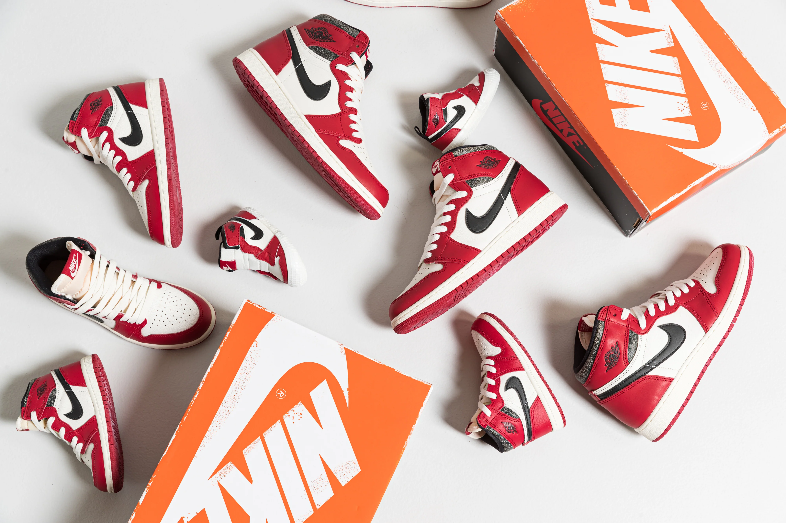
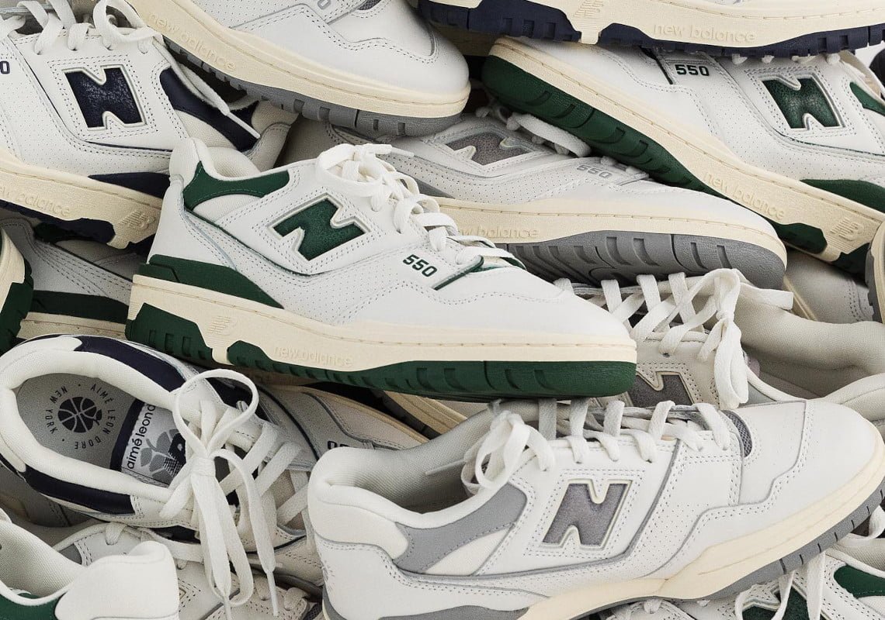
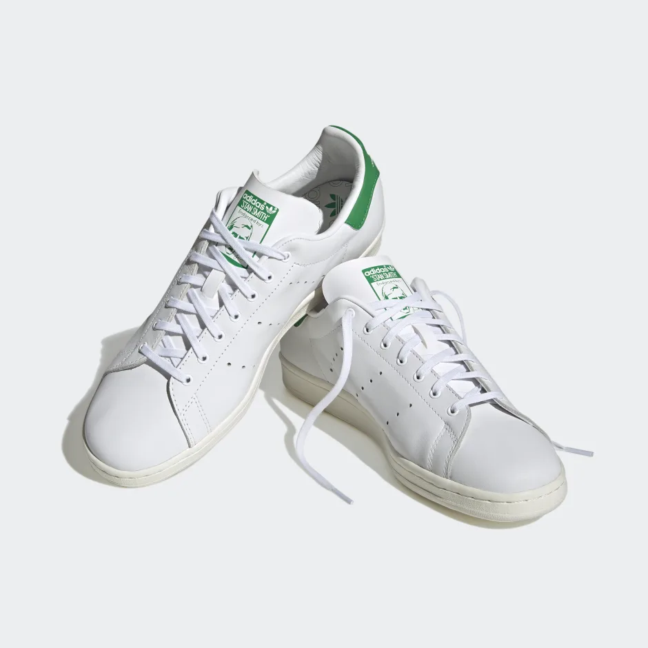
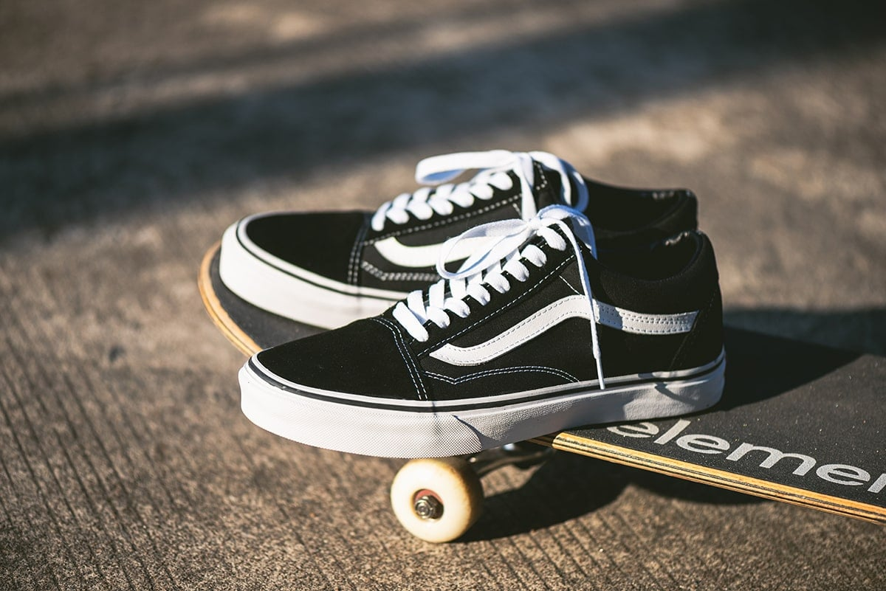

1.
Air Force 1
voto=9
Quando si pensa a Nike, la prima scarpa
che ci viene in mente è la Air Force 1,
silhouette da basket anni ’80 rimasta
indissolubilmente legata alla storia dello
Swoosh e a quella di qualunque sneakerhead.
È difficile infatti che un appassionato di
sneakers non abbia mai avuto una paio di AF1
nella propria scarpiera e non a caso la
colorazione bianca è nella TOP 5 delle sneakers
più vendute di sempre.
Iconiche.

2.
Air Jordan 1 Lost And Found
voto=8.5
Il design vintage e usurato che
contraddistingue la scarpa e che riporta alla luce
la silhouette e i dettagli originari del modello
rilasciato nel 1985, fa da contorno a una più vasta
serie di caratteristiche che renderanno questo lancio
speciale.
L’intento del Jumpman è infatti quello di ricreare nel cliente
la sensazione di aver acquistato una sneaker usata e ritrovata
all’interno di un negozio dell’usato. L’aspetto invecchiato della
scarpa è quindi ripreso anche sulla scatola, dove troviamo un
coperchio diverso rovinato dal tempo. All’interno del box, poi,
tra la carta con stampe di adv vintage, compare uno scontrino
risalente al 30 agosto del 1986, data in cui il precedente
proprietario, ovviamente fittizio, avrebbe acquistato la scarpa.
Storia.

3.
New Balance 550
voto=8.5
Tra i tanti modelli del marchio
dell’azienda calzaturiera di Boston, è uno dei più
riconoscibili.
Dai templi della pallacanestro statunitense alle
strade cittadine di mezzo mondo le New Balance 550
sono diventate uno dei modelli più amati di questo marchio.
A farne la fortuna nel 2022, oltre a un design divenuto
deliziosamente vintage, sono anche la linea neutra e le forme genderless.
Gli elementi e le linee della 550 infatti la rendono perfetta sia per il
pubblico maschile sia per quello femminile.
Sottovalutate.

4.
Stan Smith
voto=8
La storia delle adidas Stan Smith inizia
negli anni ’60 quando Horst Dassler, figlio di uno dei
fondatori di Adidas, ebbe l’idea di
creare un prodotto rivoluzionario per il mondo del tennis.
Fu solo nel ’78 che si cambiò ufficialmente il nome del modello
in adidas Originals Stan Smith. Il modello si presentava con un patch verde sul tallone
e con un ritratto stilizzato del giocatore di tennis sulla linguetta.
Ancora oggi è un'ottima scarpa per un outfit casual e non solo!
Intramontabili.

5.
Vans Old Skool
voto=8
Nel 1977 le Vans #36, le Old Skool, debuttano
con la ora celebre banda laterale Vans. Sono le prime
scarpe da skate di Vans a incorporare i pannelli in
pelle per garantire una maggiore resistenza. La banda laterale,
in origine nient'altro che un semplice scarabocchio noto
come "Jazz Stripe", è invece diventata il marchio distintivo
di Vans. Negli anni '90, la Old Skool divenne la scarpa preferita
dagli skateboarder. Le scarpe della marca Vans sono conosciute in tutto il mondo,
e la loro popolarità non diminuisce.
Un classico.
